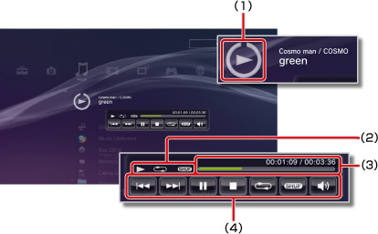

Müzik > Mini boyutta kontrol paneli kullanma
Mini boyutta kontrol paneli kullanma
Müzik çalarken çeşitli işlevleri gerçekleştirmek için mini boyutta kontrol paneli kullanın.
1. |
Müzik çalarken, PS düğmesine basın. |
||||||||
|---|---|---|---|---|---|---|---|---|---|
2. |

|
İpuçları
- Çalınmakta olan müzik içeriği için simge doğrudan
 (Müzik) simgesi altında görüntülenir.
(Müzik) simgesi altında görüntülenir. - Mini boyutta kontrol paneli müzik çalınırken
 düğmesine basılarak gizlenebilir.
düğmesine basılarak gizlenebilir.
Önceki

Geçerli veya önceki parçanın başına dönün.
Sonraki
Sonraki parçanın başına dönün.
Duraklat
Oynatmayı duraklatın.
Durdur
Oynatmayı durdurun ve mini boyutta kontrol panelini gizleyin.
Karıştır
Parçaları rastgele sırada çalın.
Tekrarla
Parçaları tekrar tekrar çalın.  düğmesine basarak üç tekrarlama modundan (aşağıda gösterilir) birini seçebilirsiniz.
düğmesine basarak üç tekrarlama modundan (aşağıda gösterilir) birini seçebilirsiniz.
 |
Bir parçayı tekrar tekrar çalın. |
|---|---|
|
Tüm parçaları tekrar tekrar çalın. |
| Görüntü yok | Tekrarlı çalmayı temizleyin ve tüm parçaları sırayla çalın. |
Ses Kontrolü
(Müzik) altında oynatılmakta olan parçaların ses çıkış düzeyini ayarlayın. Dokuz düzeyden birini seçebilirsiniz.
İpucu
Ses düzeyi çok yükseğe ayarlanırsa ses çıkışı bozulabilir. Bu durumda düzeyi alçaltın.